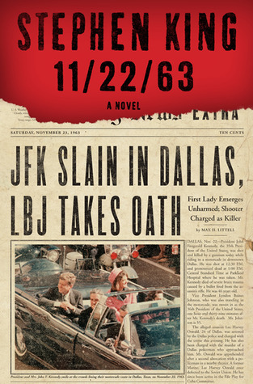

11/22/63
- Read on 2015-01-01
- Rating: ️️️️️
- Format: 🎧 (30 hours 40 minutes)
Obdurate. I feel like I need to say the word now, because if you read this book, you'll read that word way too many times, and I just want you to get used to seeing it. Although the conclusion to this book felt a little too tidy, I loved the concept, and was completely immersed in the storyline. Sometimes I struggle with time travel books, thanks to Doc Brown's original explanation to me, of how it messes with the space-time continuum. I think there is too much that is intertwined in our reality to make it all that possible to mess with the past and have things end up essentially the same now. Regardless, apart from an unnecessarily graphic love scene (or more), this book was solid, and I'd happily re-read it at some point.